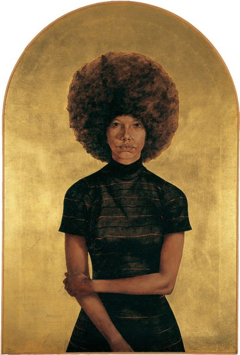
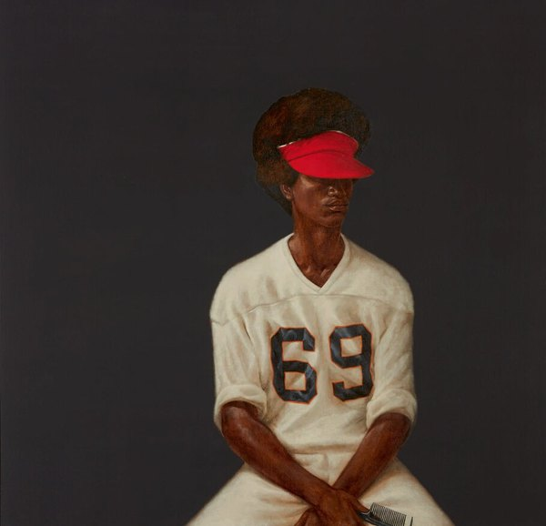
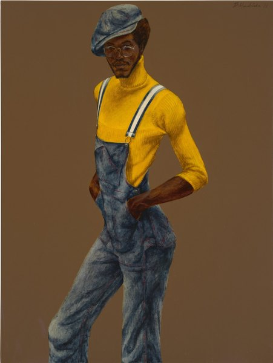

CRVI000798Joseph Beuys - [Beuys with the Eurasienstab]
Signed photograph
Signed photograph

CRVI000801Joseph Beuys - [Beuys pointing]
Portrait photograph
Portrait photograph

CRVI000804Joseph Beuys - [Beuys seated on the cobbles]
Signed photograph
Signed photograph

CRVI001017Henri Fantin-Latour - Édouard Manet
Oil on canvas · Art Institute of Chicago · 1867
Oil on canvas · Art Institute of Chicago · 1867

CRVI001025Gustave Courbet - La Voyante (La Somnambule)
Oil on canvas · Musée des Beaux-Arts et d'Archéologie, Besançon · c. 1865
Oil on canvas · Musée des Beaux-Arts et d'Archéologie, Besançon · c. 1865

CRVI001027Adrian Ghenie - Charles Darwin as a young man
Oil on canvas, 49 × 32.5 × 4.5 cm · 2014
Oil on canvas, 49 × 32.5 × 4.5 cm · 2014

CRVI001108Martin Wong - Portrait of Mikey Piñero at Ridge Street and Stanton
Acrylic on canvas, 72 × 72 in · also titled “La Vera de Nuyorico: Miguel Piñero” · 1985
Acrylic on canvas, 72 × 72 in · also titled “La Vera de Nuyorico: Miguel Piñero” · 1985

CRVI002740Unattributed - Untitled (face with orange hair and red lips)

CRVI002746Unattributed - Untitled (two figures in circuit-board headpieces)

CRVI002758Barkley L. Hendricks - Sir Nelson. Solid!
1970
1970

CRVI002760Barkley L. Hendricks - Icon for My Man Superman (Superman Never Saved Any Black People — Bobby Seale)
1969
1969

CRVI002761Barkley L. Hendricks - Photo Bloke
2016
2016

CRVI002762Barkley L. Hendricks - Lawdy Mama
1969
1969

CRVI002763Barkley L. Hendricks - Mr. Johnson (Sammy from Miami)

CRVI002764Barkley L. Hendricks - Untitled (man in yellow turtleneck and denim overalls)
1971
1971

CRVI002765Barkley L. Hendricks - Misc. Tyrone (Tyrone Smith)
1976
1976

CRVI002766Barkley L. Hendricks - FTA
1968
1968

CRVI002767Barkley L. Hendricks - Brenda P
1974
1974

CRVI002850John Heartfield - Self-portrait
1920
1920